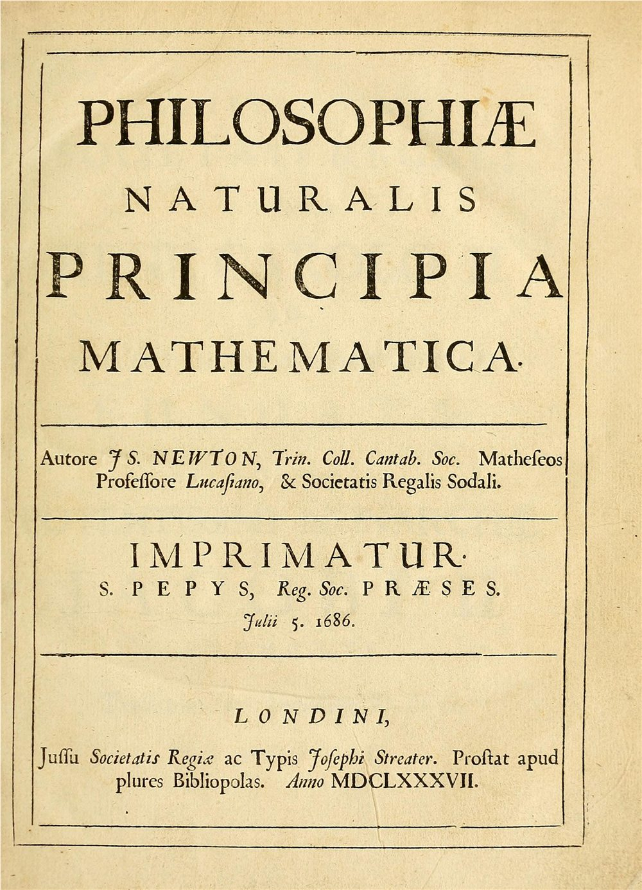

ΣF = 0
Inertia
With zero net force, velocity stays constant. Rest is not privileged: uniform straight-line motion is equally natural.
A compact theory connects pushes, collisions, falling objects, machines, moons, and planets. It is not “old physics” to discard: engineers and astronomers still use it whenever objects are much larger than atoms and move much slower than light.
F = dp/dt · Fg = −GMm r̂/r²The familiar F = ma is a constant-mass form of the second law. The more general statement is that net force equals the time rate of change of momentum. Frames in which the first law holds are called inertial frames.
With zero net force, velocity stays constant. Rest is not privileged: uniform straight-line motion is equally natural.
Net force changes momentum. For constant mass, doubling the force doubles acceleration; doubling mass halves it.
Forces between two bodies are equal and opposite. They act on different bodies, so they do not cancel inside either body’s equation of motion.
This numerical teaching model integrates Newton’s inverse-square gravity in small time steps. Change the launch speed or central mass and watch the same force create an ellipse, a tighter orbit, or an escape trajectory.
The units are normalized: radius 1 and circular speed 1. The drawing is not a scale model of the Solar System.
Calculated model
The trail is generated from a finite-step integrator. Small numerical error accumulates; it is an explanatory model, not mission-navigation software. Sonification maps orbital speed to pitch and is not measured sound from space.
Newton did not invent celestial data or the mathematics of motion from nothing. His synthesis depended on Galileo’s mechanics, Kepler’s empirical planetary laws, earlier geometry, and a broad exchange of experiments and correspondence.


A later theory does not make an earlier one useless. Relativity and quantum mechanics reproduce Newtonian predictions in the appropriate limits, while explaining regimes Newton’s framework cannot.
Near light speed, time intervals, lengths, energy, and momentum obey special relativity. No massive object can be accelerated through c.
Compare moving clocks →Near black holes, and for precision effects such as Mercury’s perihelion shift, gravity is spacetime geometry rather than a force acting in fixed space.
Explore gravity across cosmic time →Electrons in atoms do not follow little planetary paths. Quantum states predict probability amplitudes, discrete energies, and interference.
Build an interference pattern →Newtonian ideas remain inside fluid dynamics, acoustics, statistical mechanics, orbital astronomy, engineering, and every later theory’s low-speed limit.